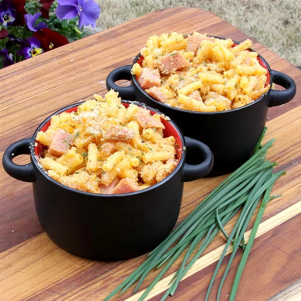

SPAMaroni and Cheese

Description:
Life's necessities: Mac and cheese plus SPAM. Or rather, SPAM plus Mac and Cheese.
(Recipe courtesy of DustyRider, allrecipes.com)
Ingredients:
- Cooking spray
- 1 12-oz. can of SPAM, cut into 1/4-inch cubes
- 1 14-oz. package deluxe macaroni and cheese dinner mix (such as Kraft)
- 1/4 cup milk
- 1/2 cup Italian-style bread crumbs
Instructions:
- Preheat oven to 350 degrees F (175 degrees C). Spray a 9x13-inch casserole dish with cooking spray.
- Bring a large pot of lightly salted water to a boil. Cook macaroni in the boiling water, stirring occasionally until tender yet firm to the bite, about 10 minutes. Drain.
- Place macaroni, cheese, cubed luncheon meat, and milk in a large bowl; mix well to combine. Turn out into casserole dish. Sprinkle bread crumbs on top.
- Bake in the preheated oven until bubbly, about 15 minutes.
Home